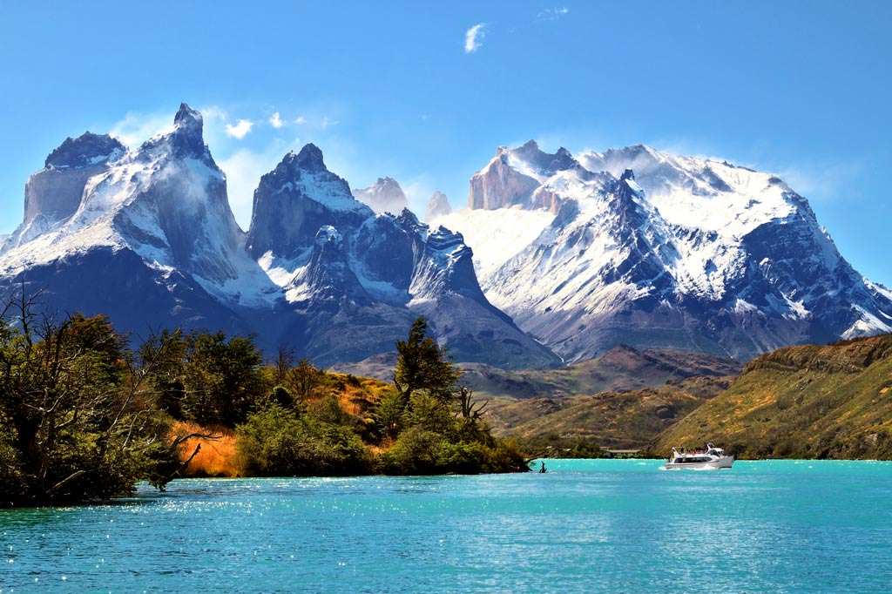
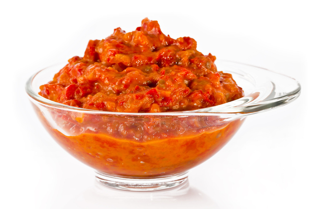
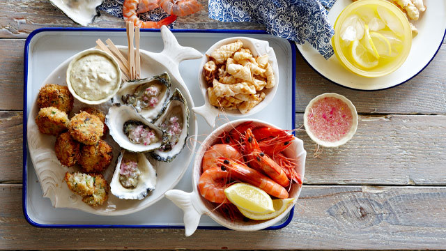
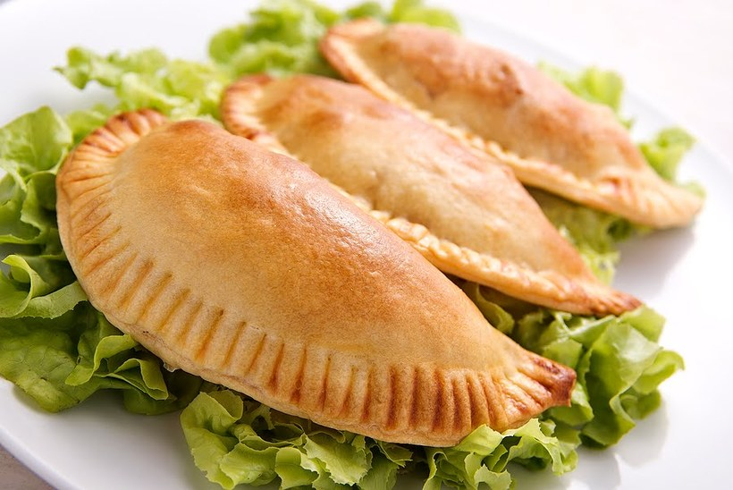
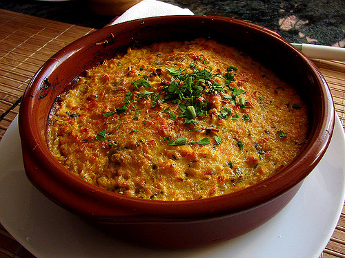
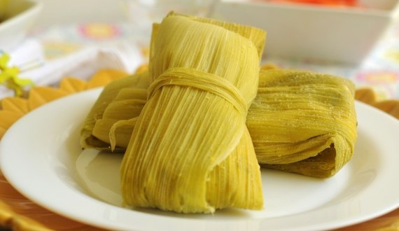
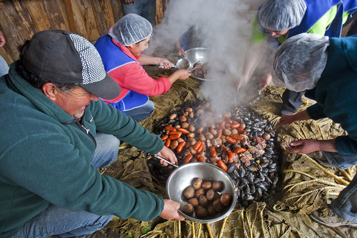
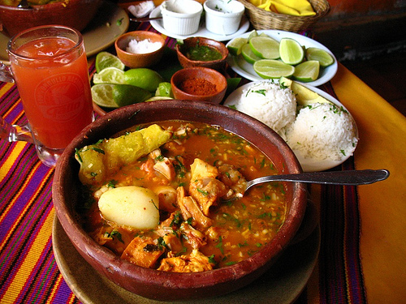
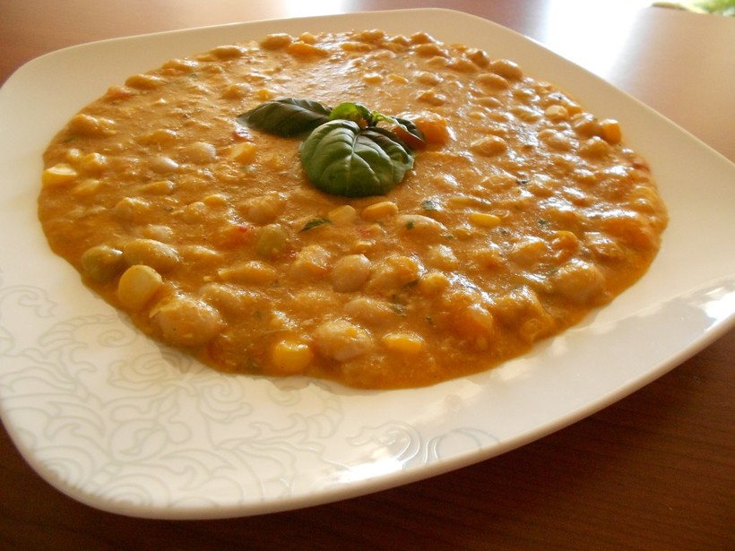
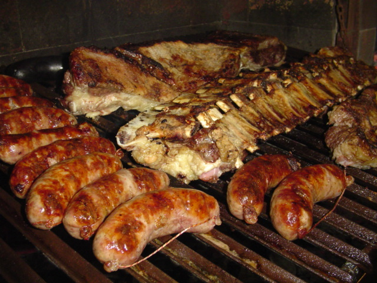

×

Chile
Традиционная еда
Пебре — это основная приправа, используемая в чилийской кухне. Её добавляют практически во все блюда. Для приготовления используют нарезанные кубиками помидоры, лук, кинзу, перец аджи или красную перечную пасту. Вы можете увидеть её на столе большинства местных ресторанов.

Морепродукты — Чили славится своим огромным разнообразием блюд, приготовленных из широко известных сортов рыбы и моллюсков, включая супы и тушёные блюда. Для их приготовления используют моллюсков, мидии, угря и другие морепродукты, выловленные недалеко от берега.

Эмпанада — пирожок с начинкой. Традиционное чилийское блюдо – эмпанада перед тем, как отправить в духовку опускают в яйца. Пирожки наполняют так называемым пино (смесь мяса, лука, оливок и варёных яиц), сыром или овощами. После долгих ночных гулянок на побережье особой популярностью пользуется эмпанада с сыром и моллюсками.

Пастель-де-чокло — кукурузный пирог. Смесь пино выкладывают в форму для выпечки и покрывают толстым слоем подслащенного теста из кукурузной муки. Выпеченный пирог подаётся горячим. Он сладкий, острый и потрясающе вкусный.

Умита — Подобно мексиканским тамале, они представляют собой кукурузные пироги, завёрнутые в листья початков кукурузы и приготовленные на пару либо отваренные. Как и пастель-де-чокло, умита – летний деликатес.

Куранто — Это блюдо популярно на самом большом острове Чили – Чилоэ. Традиционно готовят его из запечённого картофеля, курицы, мяса и колбасок, в большой глиняной яме, обложенной горячими камнями, и накрытой сверху для сохранения тепла.

Калдо-де-пата — согревающий суп из густого бульона, овощей и свиных ножек. Стоит блюдо совсем недорого, что вполне соответствует рыночным ценам – ниже 1000 песо. Попробуйте этот суп будучи в Сантьяго, в месте под названием Ла Вега Чика.

Поротос Гранадос — Это вегетарианское блюдо (одно из немногих в традиционной чилийской кухне) представляет собой сытное рагу из белой фасоли, кукурузы, овощей и базилика. Однако к нему могут добавлять и колбаски. Готовят его летом, как и большинство блюд с кукурузой. Стоит это блюдо меньше 4000 песо.

Асадо — Это блюдо представляет собой жаркое-ассорти, которое готовят по случаю торжества или какого-либо другого празднования в Чили. Готовят его на парилле или гриле: курица, мясо ягнёнка, свинины и лонганиза (чилийская колбаса) и чилийский чоризо жарятся на дымящихся углях. Для того чтобы ощутить настоящий вкус этого блюда, его надо отведать в доме чилийца. Бутылка вина или писко в качестве подарка позволят Вам съесть столько мяса, сколько в вас влезет.

____